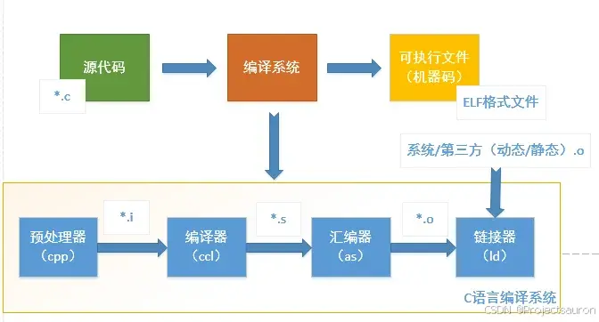
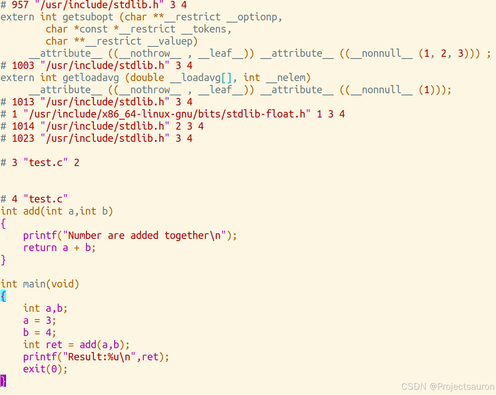
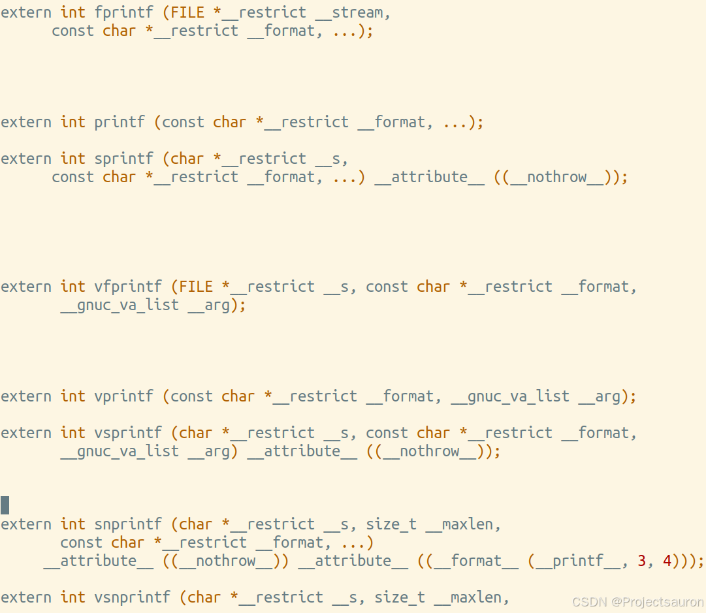
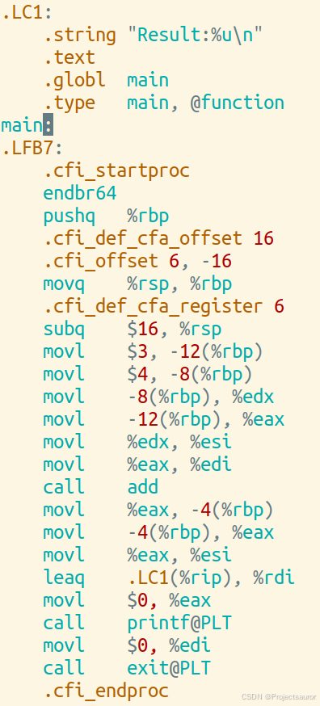
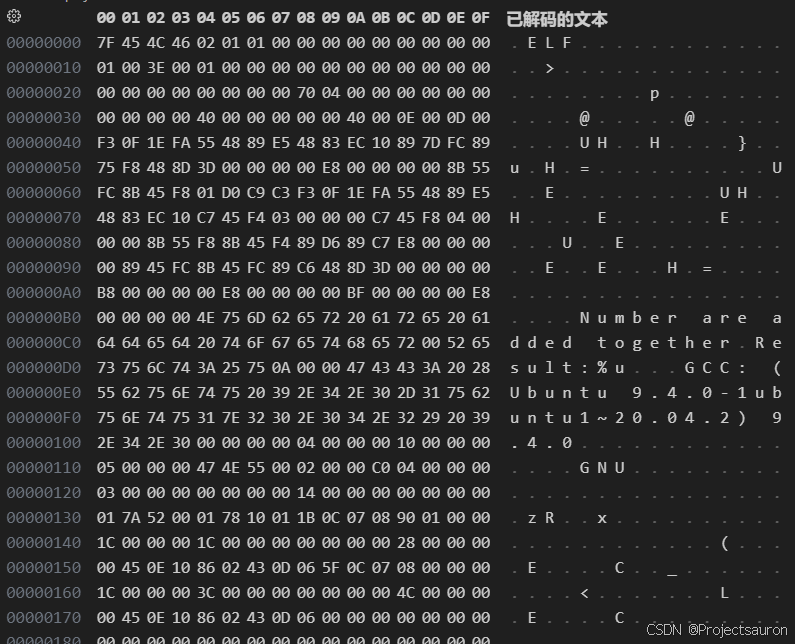
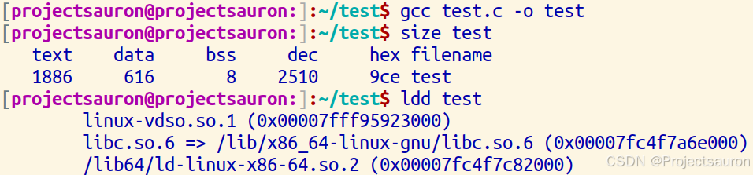
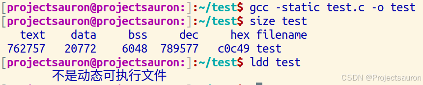

Linux 下 C/C++ 程序编译的过程
[toc]
本文将介绍如何将 C/C++ 语言编写的程序转换成为处理器能够执行的二进制代码的过程，包括四个步骤：预处理（Preprocessing）编译（Compilation）汇编（Assembly）链接（Linking）。

在此之前，首先来看一下 GCC 工具链。
一、GCC 工具链
GCC 是 GUN Compiler Collection 的简称，是 Linux 系统上常用的编译工具。GCC 工具链软件包括 GCC、Binutils、C 运行库等。
- GCC
GCC（GNU C Compiler）是编译工具。本文所要介绍的将 C/C++ 语言编写的程序转换成为处理器能够执行的二进制代码的过程即由编译器完成。
- Binutils
- 一组二进制程序处理工具，包括：
addr2line、ar、objcopy、objdump、as、ld、ldd、readelf、size等。这一组工具是开发和调试不可缺少的工具，分别简介如下：addr2line：用来将程序地址转换成其所对应的程序源文件及所对应的代码行，也可以得到所对应的函数。该工具将帮助调试器在调试的过程中定位对应的源代码位置。as：主要用于汇编，有关汇编的详细介绍请参见后文。ld：主要用于链接，有关链接的详细介绍请参见后文。ar：主要用于创建静态库。为了便于初学者理解，在此介绍动态库与静态库的概念：- 如果要将多个
.o目标文件生成一个库文件，则存在两种类型的库，一种是静态库，另一种是动态库。 - 在 windows 中静态库是以
.lib为后缀的文件，共享库是以.dll为后缀的文件。 - 在 Linux 中静态库是以
.a为后缀的文件，共享库是以.so为后缀的文件。 - 静态库和动态库的不同点在于代码被载入的时刻不同。静态库的代码在编译过程中已经被载入可执行程序，因此体积较大。共享库的代码是在可执行程序运行时才载入内存的，在编译过程中仅简单的引用，因此代码体积较小。在 Linux 系统中，可以用
ldd命令查看一个可执行程序依赖的共享库。 - 如果一个系统中存在多个需要同时运行的程序且这些程序之间存在共享库，那么采用动态库的形式将更节省内存。
- 如果要将多个
ldd：可以用于查看一个可执行程序依赖的共享库。objcopy：将一种对象文件翻译成另一种格式，譬如将.bin转换成.elf、或者将.elf转换成.bin等。objdump：主要的作用是反汇编。有关次命令的详细介绍，可以参考：Linux 下 objdump 命令的使用。readelf：显示有关 ELF 文件的信息，可以参考前文：ELF 文件格式。size：列出可执行文件每个部分的尺寸和总尺寸，代码段、数据段、总大小等，请参见后文了解使用 size 的具体使用实例。
- 一组二进制程序处理工具，包括：
- C 运行库
- C 语言标准主要由两部分组成：一部分描述 C 的语法，另一部分描述 C 标准库。
- C 标准库定义了一组标准头文件，每个头文件中包含一些相关的函数、变量、类型声明和宏定义，譬如常见的
printf函数便是一个 C 标准库函数，其原型定义在stdio头文件中。 - C 语言标准仅仅定义了 C 标准库函数原型，并没有提供实现。
- 因此，C 语言编译器通常需要一个 C 运行时库（C Run Time Libray，CRT）的支持。C 运行时库又常简称为 C 运行库。
- 与 C 语言类似，C++ 也定义了自己的标准，同时提供相关支持库，称为 C++ 运行时库。
二、编译过程
示例程序：
1 | |
1、预处理
预处理的过程主要包括以下过程：
- 将所有的
#define删除，并且展开所有的宏定义，并且处理所有的条件预编译指令，比如#if、#ifdef、#elif、#else、#endif等。 - 处理
#include预编译指令，将被包含的文件插入到该预编译指令的位置。 - 删除所有注释“
//”和“/* */”。 - 添加行号和文件标识，以便编译时产生调试用的行号及编译错误警告行号。
- 保留所有的
#pragma编译器指令，后续编译过程需要使用它们。
使用 GCC 进行预处理的命令如下：
1 | |
下面是 test.i 文件的一部分内容：

正如前文所说，预处理过程删去了文件中的头文件，并将对应文件中的内容包含到当前文件中：

2、编译
编译过程就是对预处理完的文件进行一系列的词法分析，语法分析，语义分析及优化后生成相应的汇编代码。
- 词法分析：将源码按照语法规则进行分割，识别出各个独立的单词（token），如变量名、关键字、运算符等，并生成词法单元（token）序列。
- 语法分析：根据文法规则，分析词法单元序列的结构，构建抽象语法树（AST）。语法分析过程通常使用上下文无关文法和语法分析算法（如 LL 算法或 LR 算法）。
- 语义分析：对抽象语法树进行静态语义检查，验证语法结构是否符合语言规范，包括类型检查、作用域检查、函数调用检查等。在这一阶段中，编译器会进行符号表的构建，并进行符号的引用和声明的匹配。
- 中间代码生成：将抽象语法树转化为一种中间表示形式，包括三地址码、四元式、抽象指令集等。这种中间表示形式更加抽象，便于进行优化和目标代码生成。
- 优化：对中间代码进行优化，以改进程序的运行效率和空间利用率。优化的方式包括常量折叠、循环优化、函数内联、代码复用等。
- 目标代码生成：将优化后的中间代码转化为目标机器的机器代码。这一步根据目标机器的特点和指令集，将中间代码转化为目标机器能够执行的代码，包括指令的选择、寄存器分配、指令调度等。
更多详细的内容可以去了解编译原理。
使用 GCC 进行编译的命令如下：
1 | |
上述命令生成的汇编程序 test.s 的代码片段如下所示，其全部为汇编代码。

3、汇编
汇编过程调用对汇编代码进行处理，生成处理器能识别的指令，保存在后缀为
.o的目标文件中。由于每一个汇编语句几乎都对应一条处理器指令，因此，汇编相对于编译过程比较简单，通过调用Binutils中的汇编器as根据汇编指令和处理器指令的对照表一一翻译即可。当程序由多个源代码文件构成时，每个文件都要先完成汇编工作，生成.o目标文件后，才能进入下一步的链接工作。注意：目标文件已经是最终程序的某一部分了，但是在链接之前还不能执行。
- 指令选择：根据目标机器的指令集架构和指令要求，将目标代码中的每个中间指令转化为目标机器的指令。指令选择的过程中会考虑目标机器的寻址模式、寄存器可用性等因素。
- 寄存器分配：对于每个指令中需要使用到的寄存器，分配目标机器中可用的寄存器。寄存器分配算法可以根据寄存器的可用性、寄存器的生存周期等因素来进行。
- 指令调度：根据目标机器的特性，对指令进行排序和调整，以最大程度地利用硬件资源，提高指令的并行度和执行效率。指令调度可以包括指令的重排、插入空闲周期、移动指令位置等操作。
- 符号解析：解析目标代码中的符号引用，将其与实际的地址进行绑定。这一步通常需要用到链接器生成的重定位表，将符号引用转化为具体的地址。
- 生成可执行文件：将经过汇编过程的目标代码生成可执行文件或者可执行的机器代码。这一步包括将目标代码写入文件中，并根据操作系统的格式要求进行文件头和相关信息的设置。
使用 GCC 进行汇编的命令如下：
1 | |
可以看出，test.o 目标文件为 ELF 格式的可重定向文件。
ELF 文件可以参考 ELF 文件格式

4、链接
链接也分为静态链接和动态链接，其要点如下：
- 静态链接是指在编译阶段直接把静态库加入到可执行文件中去，这样可执行文件会比较大。链接器将函数的代码从其所在地（不同的目标文件或静态链接库中）拷贝到最终的可执行程序中。为创建可执行文件，链接器必须要完成的主要任务是：
- 符号解析（把目标文件中符号的定义和引用联系起来）
- 重定位（把符号定义和内存地址对应起来然后修改所有对符号的引用）。
- 动态链接则是指链接阶段仅仅只加入一些描述信息，而程序执行时再从系统中把相应动态库加载到内存中去。
- 在 Linux 系统中，gcc 编译链接时的动态库搜索路径的顺序通常为：首先从 gcc 命令的参数
-L指定的路径寻找；再从环境变量LIBRARY_PATH指定的路径寻址；再从默认路径/lib、/usr/lib、/usr/local/lib寻找。 - 在 Linux 系统中，执行二进制文件时的动态库搜索路径的顺序通常为：首先搜索编译目标代码时指定的动态库搜索路径；再从环境变量
LD_LIBRARY_PATH指定的路径寻址；再从配置文件/etc/ld.so.conf中指定的动态库搜索路径；再从默认路径/lib、/usr/lib寻找。 - 在 Linux 系统中，可以用
ldd命令查看一个可执行程序依赖的共享库。
- 在 Linux 系统中，gcc 编译链接时的动态库搜索路径的顺序通常为：首先从 gcc 命令的参数
由于链接动态库和静态库的路径可能有重合，所以如果在路径中有同名的静态库文件和动态库文件，比如 libtest.a 和 libtest.so，gcc 链接时默认优先选择动态库，会链接 libtest.so，如果要让 gcc 选择链接 libtest.a 则可以指定 gcc 选项 -static，该选项会强制使用静态库进行链接。以上面的程序为例：如果使用命令“gcc test.c -o test”则会使用动态库进行链接，生成的 ELF 可执行文件的大小（使用 Binutils 的 size 命令查看）和链接的动态库（使用 Binutils 的 ldd 命令查看）如下所示：
1 | |

如果使用命令“gcc -static test.c -o test”则会使用静态库进行链接，生成的 ELF 可执行文件的大小（使用 Binutils 的 size 命令查看）和链接的动态库（使用 Binutils 的 ldd 命令查看）如下所示：
1 | |
链接器链接后生成的最终文件为 ELF 格式可执行文件，一个 ELF 可执行文件通常被链接为不同的段，常见的段如 .text、.data、.rodata、.bss 等段。
可以看到，使用静态链接，最终生成的可执行文件的大小比使用动态链接的时候大了很多：

关于 text、data、bss 这些段的信息可以参考：单片机内存区域划分。